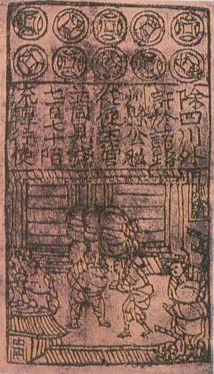

돈의 역사 — 조개껍데기에서 스마트폰 결제까지The History of Money — From Shells to Mobile Payments
- 돈은 물건을 바꾸기 불편해서 생긴 약속입니다.Money is a promise born because trading goods was inconvenient.
- 조개 → 금속 동전 → 종이돈 → 금과 묶인 돈 → 금과 끊긴 돈(신용화폐) → 숫자 돈 순서로 바뀌었습니다.It changed from shells → metal coins → paper → gold-backed money → fiat money → digital numbers.
- 지금 돈의 가치는 나라와 중앙은행에 대한 믿음에서 나옵니다.Today money's value comes from trust in the state and its central bank.
피아노를 조율하고 받는 돈은 대부분 계좌이체입니다. 손님 휴대폰 화면에서 숫자가 움직이면 제 통장 숫자가 늘어납니다. 생각해 보면 신기한 일입니다. 종이도 동전도 오가지 않는데 우리는 그것을 "돈을 받았다"고 믿습니다. 이 레슨은 그 믿음이 어떻게 만들어졌는지, 돈이 걸어온 긴 길을 왕초보 눈높이로 따라가 봅니다.Most of the money I receive for tuning pianos comes by bank transfer. A number moves on the customer's phone, and the number in my account goes up. No paper or coins change hands, yet we believe we "got paid." This lesson follows the long road of money and how that trust was built.
1. 물물교환의 불편함 — "내 쌀과 네 신발"
1. The trouble with barter — "my rice for your shoes"아주 옛날에는 필요한 물건을 직접 바꿨습니다. 쌀을 가진 사람이 신발을 원하면, 신발을 가진 사람이 마침 쌀을 원해야 거래가 됩니다. 경제학에서는 이것을 "욕구의 이중 일치"가 필요하다고 말합니다. 피아노 조율을 해 주고 그 집 감자 한 자루를 받는다면, 저는 감자가 필요하지 않을 때 곤란해집니다. 게다가 감자는 썩고, 반으로 나누기도 어렵습니다. 그래서 사람들은 누구나 받아 주고, 오래 가고, 잘게 나눌 수 있는 물건을 찾기 시작했습니다. 이것이 돈의 출발입니다.Long ago, people traded goods directly. If I have rice and want shoes, the shoemaker must also want rice. Economists call this the "double coincidence of wants." If I tuned a piano for a sack of potatoes, I would be in trouble when I didn't need potatoes. So people looked for something everyone accepts, that lasts, and that can be divided. That was the start of money.
2. 물품화폐 — 조개, 소금, 곡식
2. Commodity money — shells, salt and grain여러 지역에서 조개껍데기, 소금, 곡식, 가축, 천 같은 물건이 돈 역할을 했습니다. 한자 '재물 재(財)', '살 매(買)', '팔 매(賣)'에 모두 '조개 패(貝)'가 들어 있는 것도 옛날 조개가 돈이었던 흔적이라고 흔히 설명합니다. 영어 salary(월급)가 소금(salt)과 관련 있다는 이야기도 유명합니다. 하지만 조개는 바닷가에서 쉽게 주울 수 있고 소금은 젖으면 녹아서, 더 단단하고 귀한 것이 필요했습니다.In many places, shells, salt, grain, cattle and cloth worked as money. Several Chinese characters for wealth and trade contain the sign for "shell," a trace of shell money. The English word salary is often linked to salt. But shells were easy to pick up and salt melts when wet, so people needed something harder and rarer.
3. 금속화폐 — 동전의 탄생
3. Metal money — the birth of coins금, 은, 구리 같은 금속은 썩지 않고 녹여서 나눌 수 있습니다. 기원전 7세기 무렵 지금의 튀르키예 땅에 있던 리디아 왕국에서 금과 은이 섞인 호박금(일렉트럼)에 무늬를 찍은 동전이 만들어졌다고 알려져 있습니다. 왕의 도장이 찍혀 있으니 무게를 일일이 달지 않아도 되었습니다. 우리나라에서도 고려 시대 건원중보, 조선 시대 상평통보 같은 엽전이 쓰였습니다.Metals like gold, silver and copper do not rot and can be melted and divided. Around the 7th century BC, the Kingdom of Lydia (in today's Türkiye) stamped coins of electrum, a mix of gold and silver. Korea also used coins such as Sangpyeong Tongbo in the Joseon era.
4. 종이돈 — 중국 송나라의 교자
4. Paper money — Jiaozi of the Song dynasty동전은 많아지면 무겁습니다. 큰 장사를 하는 상인이 엽전 수천 냥을 지고 다닐 수는 없지요. 11세기 중국 송나라 쓰촨 지방에서는 상인들이 쓰던 보관증이 발전해 교자(交子)라는 종이돈이 나랏돈으로 발행되었습니다. 세계 최초의 정부 지폐로 자주 소개됩니다. 그런데 나라가 돈이 부족할 때마다 교자를 마구 찍자 값이 떨어졌습니다. 돈을 너무 많이 찍으면 물가가 오른다는 교훈은 이때부터 있었습니다.Coins are heavy in large amounts. In 11th-century Song China, merchants' deposit receipts grew into Jiaozi, often called the world's first government paper money. When the state printed too much, its value fell. The lesson that printing too much money raises prices is very old.

5. 금본위제 — 종이돈을 금과 묶다
5. The gold standard — tying paper money to gold종이돈을 믿게 하려면 "이 종이를 가져오면 금으로 바꿔 준다"는 약속이 효과적이었습니다. 이것을 금본위제라고 합니다. 1694년 세워진 영국 중앙은행(잉글랜드은행)의 지폐가 신뢰를 얻었고, 영국은 19세기에 금본위제를 공식화했습니다. 다른 나라들도 따라 하면서 19세기 후반 세계 무역은 금을 기준으로 돌아갔습니다. 장점은 돈을 마구 찍을 수 없다는 것, 단점은 경제가 커져도 금이 늘지 않으면 돈이 모자란다는 것이었습니다. 1929년 대공황 때 이 단점이 크게 드러나 여러 나라가 금본위제를 떠났습니다.To make people trust paper money, governments promised to exchange it for gold. This is the gold standard. The Bank of England, founded in 1694, earned trust, and Britain made the gold standard official in the 19th century. It stopped governments from printing freely, but money could run short when the economy grew. Many countries left it during the Great Depression.
6. 브레턴우즈 체제와 닉슨 쇼크
6. Bretton Woods and the Nixon shock1944년 미국 뉴햄프셔주 브레턴우즈에 44개 연합국 대표가 모여 전쟁 뒤의 돈 질서를 정했습니다. 미국 달러는 금 1온스에 35달러로 바꿔 주고, 다른 나라 돈은 달러에 고정하는 방식입니다. 달러가 세계 돈의 중심(기축통화)이 된 순간입니다. 그런데 미국이 전쟁과 복지에 돈을 많이 쓰면서 금보다 달러가 훨씬 많아졌습니다. 결국 1971년 8월 15일 닉슨 대통령이 달러를 금으로 바꿔 주는 것을 중단한다고 발표했습니다. 이것을 닉슨 쇼크라고 부릅니다. 이때부터 세계의 돈은 금과 끊어진 신용화폐(법정화폐)가 되었습니다.In 1944, delegates from 44 Allied nations met at Bretton Woods, USA. The dollar was fixed at $35 per ounce of gold, and other currencies were pegged to the dollar. The dollar became the world's key currency. Later the US had far more dollars than gold, and on August 15, 1971, President Nixon stopped exchanging dollars for gold. Since then, world money has been fiat money, not tied to gold.
7. 카드, 계좌이체, 디지털 화폐
7. Cards, transfers and digital money오늘날 우리 돈의 대부분은 지폐가 아니라 은행 컴퓨터 속 숫자입니다. 신용카드, 계좌이체, 간편결제가 그렇습니다. 2009년 비트코인 같은 암호화폐가 나왔고, 여러 중앙은행은 디지털 형태의 법정화폐(CBDC)를 연구하고 있습니다. 모양은 계속 바뀌지만 핵심은 같습니다. "남들도 이것을 받아 줄 것"이라는 믿음입니다.Today most money is not paper but numbers in bank computers: cards, transfers and mobile payments. Bitcoin appeared in 2009, and many central banks are studying digital currencies. The form keeps changing, but the core stays the same: trust that others will accept it.
8. 조율사의 눈으로 본 돈
8. Money through a tuner's eyes피아노에는 기준음 라(A)=440Hz라는 약속이 있습니다. 모든 악기가 그 약속을 지켜야 합주가 됩니다. 돈도 비슷합니다. 모두가 같은 기준을 믿어야 거래가 됩니다. 그런데 기준음을 제멋대로 올리면 악기들이 어긋나듯, 돈을 너무 많이 찍으면 물가라는 소리가 어긋납니다. 그래서 중앙은행이 돈의 양을 조율하는 일은 저에게 무척 친근하게 느껴집니다.Pianos share a promise: A = 440Hz. Every instrument must keep it to play together. Money is similar: everyone must trust the same standard. If the pitch is raised at will, instruments go out of tune; if too much money is printed, prices go out of tune. That is why a central bank "tuning" the money supply feels familiar to me.
📘 오늘의 영어 단어
📘 Today's English words| 영어 | 발음 | 뜻 |
|---|---|---|
| barter | 바터 | 물물교환 |
| currency | 커런시 | 통화, 화폐 |
| coin | 코인 | 동전 |
| banknote | 뱅크노트 | 지폐 |
| gold standard | 골드 스탠더드 | 금본위제 |
| fiat money | 피앗 머니 | 법정화폐(신용화폐) |
| central bank | 센트럴 뱅크 | 중앙은행 |
| inflation | 인플레이션 | 물가 상승 |
| trust | 트러스트 | 믿음, 신뢰 |
| legal tender | 리걸 텐더 | 법정 통화 |
쉬운 예문
- Money is a promise that people trust.
돈은 사람들이 믿는 약속입니다. - The central bank controls how much money is printed.
중앙은행이 돈을 얼마나 찍을지 조절합니다. - Too much money can cause inflation.
돈이 너무 많으면 물가가 오를 수 있습니다.
🔊 버튼을 누르면 브라우저에 들어 있는 음성으로 영어를 읽어 줍니다(기기에 따라 안 될 수 있어요).
자주 묻는 질문
Frequently asked questions돈은 왜 가치가 있나요?Why does money have value?
지금의 돈(신용화폐)은 금으로 바꿔 주지 않습니다. 나라가 세금을 그 돈으로 받고, 법으로 거래에 쓰도록 정하고, 사람들이 서로 받아 준다는 믿음이 있기 때문에 가치가 있습니다.Today's money cannot be exchanged for gold. It has value because the government accepts it for taxes, the law makes it legal tender, and people trust each other to accept it.
닉슨 쇼크는 왜 중요한가요?Why is the Nixon shock important?
1971년 이후 세계의 돈이 금과 끊어져서, 중앙은행이 금 보유량과 상관없이 돈의 양을 조절할 수 있게 되었습니다. 지금의 금리 정책, 물가 문제, 달러 중심 체제를 이해하는 출발점입니다.After 1971, world money was cut off from gold, so central banks could manage the money supply without gold limits. It is the starting point for understanding interest rate policy, inflation and the dollar system.
비트코인도 돈인가요?Is Bitcoin money?
거래에 쓰이기도 하지만 가격 변동이 매우 커서 많은 나라에서 법정화폐로 인정하지 않습니다. 공부는 해 두되, 큰돈을 넣기 전에는 위험을 충분히 알아야 합니다.It is sometimes used for payments, but its price swings a lot, and most countries do not treat it as legal tender. Study it, but know the risks before putting in big money.
※ 이 글은 투자 권유가 아닌 공부 자료입니다.※ This page is study material, not investment advice. 숫자와 연도는 널리 알려진 역사 자료를 바탕으로 쉽게 정리했으며, 실제 투자 판단은 본인 책임입니다. 사진 출처: Jiao zi.jpg (퍼블릭 도메인) · Morgenthau Bretton Woods opening 1944.jpg (퍼블릭 도메인). 그림과 움직이는 그림은 직접 만들었습니다. · 📞 010-8756-8740